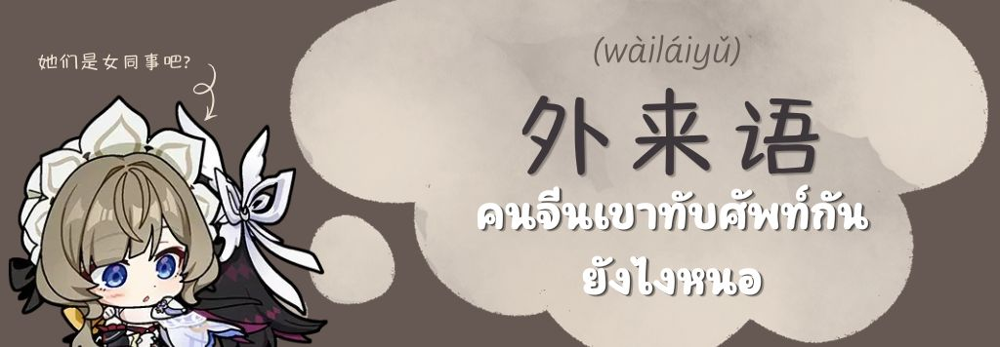

คนจีนเขาทับศัพท์กันยังไงหนอ

บางคนอาจเคยได้ยิน ได้เห็นคำจากภาษาอังกฤษที่คนไทยได้นำมาทับศัพท์ให้เข้ากับเสียงในภาษาของตัวเอง แน่นอนว่าคนจีนเองก็เช่นกันค่ะ
ในภาษาจีนเรียกคำทับศัพท์ว่า
外来语 (wàiláiyǔ) หรือ 借词 (jiècí)
แต่ด้วยข้อจำกัดทางเสียงและพยัญชนะในภาษาจีนที่ทำให้เสียงที่ทับศัพท์ออกมานั้นไม่ได้เป๊ะ แต่ก็พอเดาได้นั่นเองค่ะ
โดยการทับศัพท์ของคนจีนนั้นค่อนข้างจะมีความพิเศษใส่ใข่นิด ๆ มีการทับศัพท์ทั้ง ทับแค่เสียง ทับเสียงและความหมายให้เหมือน ทับเสียงบางส่วน และการทับโดยการแปลไปเลยค่ะ
รับมาแล้วพยายามเลียนเสียงอย่างเดียว เช่น 沙发 (shāfā | โซฟา)、纽约 (Niǔyuē | นิวยอร์ก)、苏打(sūdá | โซดา)、麦当劳 (Màidāngláo | แมคโดนัลด์)、可口可乐 (kěkǒukělè | โคคาโคล่า)
เลียนเสียงและพยายามใส่ความหมายเดียวกันไปด้วย เช่น 幽浮 (yōufú | ยูเอฟโอ)、骇客 (hàikè | แฮกเกอร์)、基因 (jīyīn | gene）
รับมาแล้วเลียนเสียงบางส่วน แล้วจบแค่นั้น มักพบได้กับคำศัพท์ด้านเคมี เช่น 氧 (Yǎng | ออกซิเจน (O))、钠 (Nà | โซเดียม (Na))、钙 (Gài | แคลเซียม (Ca))
รับแล้วเลียนเสียงโดยนำตัวอักษรจีนโบราณมาใช้เลียนเสียง เช่น 鸸鹋 (Ér miáo| นกอีมู (Emu))、㺢㹢狓 (huò jiā pí | Okapi สัตว์ชนิดหนึ่งมีลายที่ขาคล้ายม้าลา
โดยการทับศัพท์ที่เห็นได้บ่อย ๆ คือการเลียนเสียงหรือทำเสียงให้คล้ายค่ะ โดยพบได้ในการเล่นเกมแล้วชื่อตัวละครเป็นภาษาต่างประเทศ ยกตัวอย่างเช่น
哥伦比娅！Columbina
โดย Columbina โคลัมบิน่า หรือที่คนไทยเรียกกันเล่น ๆ ว่าบี๋นะคะ ตัวจีนของตัวละครนี่จะเป็นการเลียนเสียงค่ะ 哥伦比娅 Gēlúnbǐyà
เทียบได้ว่า 哥 =co 伦比=lumbi 娅=na ค่ะ
บางคนอาจมีคำถามว่าทำไม na ไม่ใช่ 娜 ที่อ่านว่า น่า เลยล่ะ คำตอบอาจจะเป็นเพราะว่า 娅 เป็นคำที่ให้ดูอ่อนโยน ผู้หญิ๊ง ผู้หญิง โทนเสียงเบานั่นเองค่ะ
Columbina ในภาษาลาตินแปลว่านกพิราบค่ะ อันเป็นที่มาของชื่อในแฟนด้อมมีการเรียกตัวละครนี้ว่า 鸽子 gēzǐ เกอจื่อที่แปลว่านกพิราบเช่นและเสียงคล้าย ๆ กับชื่อตัวละครนี้
ตัวอย่างต่อไปคือคู่บุญอย่างแซนโดรเน่ 桑多涅 Sandrone
จะเป็นการเลียนเสียงเหมือนกันกับโคลัมบิน่าเลยค่ะ
桑多涅 Sāng duō niè การเทียบเสียงเป็นพยางค์ต่อพยางค์เช่นเดียวกันค่ะ ในแฟนด้อมจะเรียกแซนว่า 小猫 ลูกแมว ยัยแมวน้อย เพราะแซนเหมือนแมวมากจริง ๆ ค่ะ
(เอเนอร์จี้เอ็นดู)